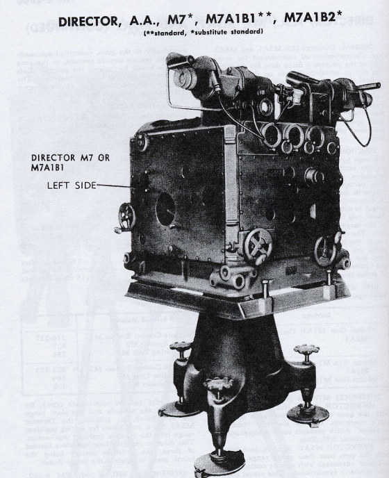
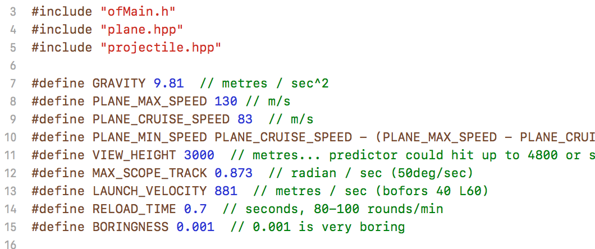

The software track at SFPC teaches creative coding by recreating works or styles of pioneering artists like the animator John Whitney.
[...] but it was only in the mid-50s when I began to see these devices that it became clear that there were great possibilities for developing animation machines that would manipulate design in ways that could never be done by hand.
– John Whitney in the above video, 1:15
When Whitney says 'these devices', he is talking about antiaircraft gun directors from World War II.

An antiaircraft gun director aims a gun, given a few inputs like altitude and speed, at an aircraft. The operator simply points the gunsight directly at where the target is now; the machine computes how far ahead to aim the projectile.
In the 1950s, John Whitney repurposed an M5 (and later an M7) antiaircraft gun director to precisely control camera and subject motions for film, creating groud-breaking animations.
During this period he also directed engineering films on guided missiles, which leads me to interpret his work more as a celebration of the tools of war than as a tale of Swords to Ploughshares or in any way subversive. So, inspired by Whitney, I set out to make a tool of war out of a tool of art.
My antiaircraft gun director is based on the specs for Whitney's M5, with gravity and aircraft altitude and speed acurately modelled. Height and speed are input with the mouse: you simply track the aircraft and the software will aim ahead to hit it.
At some point in the process of creating this tool, I noticed that I was spending more time playing with it than necessary to just to make it work. It's kind of fun to shoot planes out of the sky in a video game. But this is supposed to be a tool for military use, not a video game.
The process became an exercise in something like minimalism, stripping away as much of the experience as possible while still creating a critique of Whitney. Remnants of the pre-anti-fun time are still scattered throughout the code, like keeping a concept of "when a plane was struck" instead of just removing it, so that the explosion or whatever could be drawn.

I ended up deciding on three priorities to inform decisions:
Generally this ordering worked. Three exceptions were made to rule #1: air resistance is not modelled, a heuristic is used to simplify solving the prediction (to compute it exactly requires solving a quartic…), and aircraft are drawn twice as large as they would be.
I let the first two slide because they are difficult, and fixing them would require a time investment that would not really serve the ultimate purpose of critique that the piece is supposed to be. But it still hurts a little that I didn't at least get air resistance in. (the rest really is pretty well researched and accurate! and it doesn't matter! and I hate weapons anyway!)
So how to draw aircraft to balance these priorities?
They could have been featureless little rectangles for maximum boringness, but I felt that they should be somewhat representative to make it easier to understand the piece. And to show up on the screen (and also because computer mouses, trackpads, and touchscreens are all imprecise input devices), they break the scale and are double their actual size.
From the reactions of classmates, the piece had mixed success in not being fun. Feelings toward it seemed to be mostly neutral, but with some skew in both directions, toward "fun" and also toward "not fun at all, very unsettling".
My favourite reaction was from Gonza, who was very accurate at hitting planes by anticipating their trajectory himself, without using the predictor in a helpful way. Once he understood how the predictor worked, it instantly lost its fun and became very boring. Yay?
I'll admit I started down this path as a cop-out of the Whitney homework as assigned (I've done visual stuff with sin and cos a few times before), but it was an interesting process and led to discussions and questions that will stay with me.